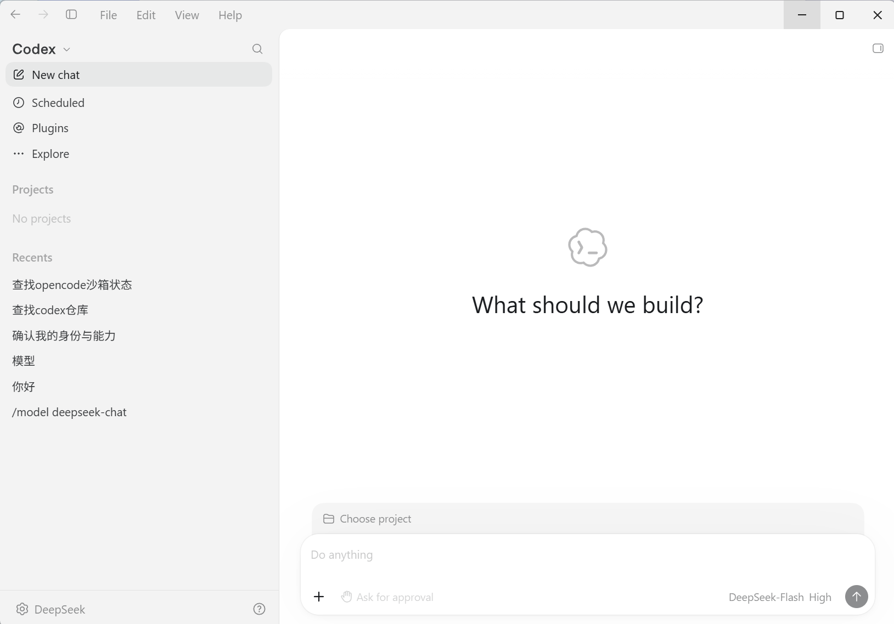
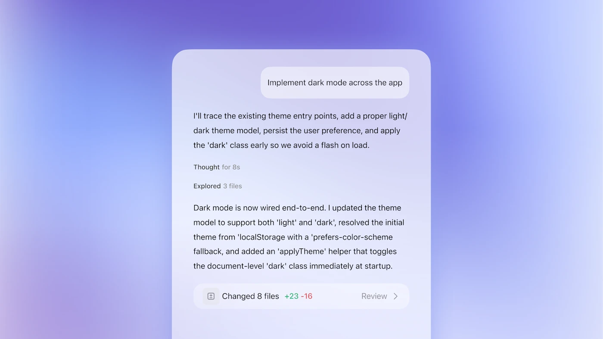
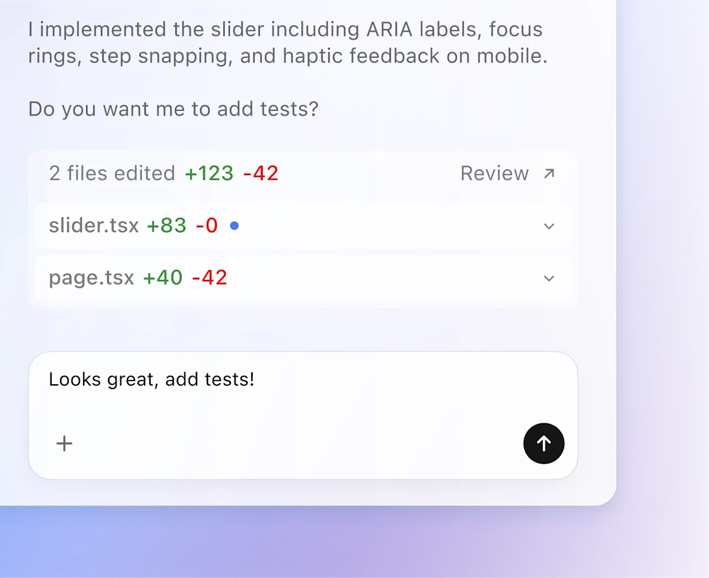
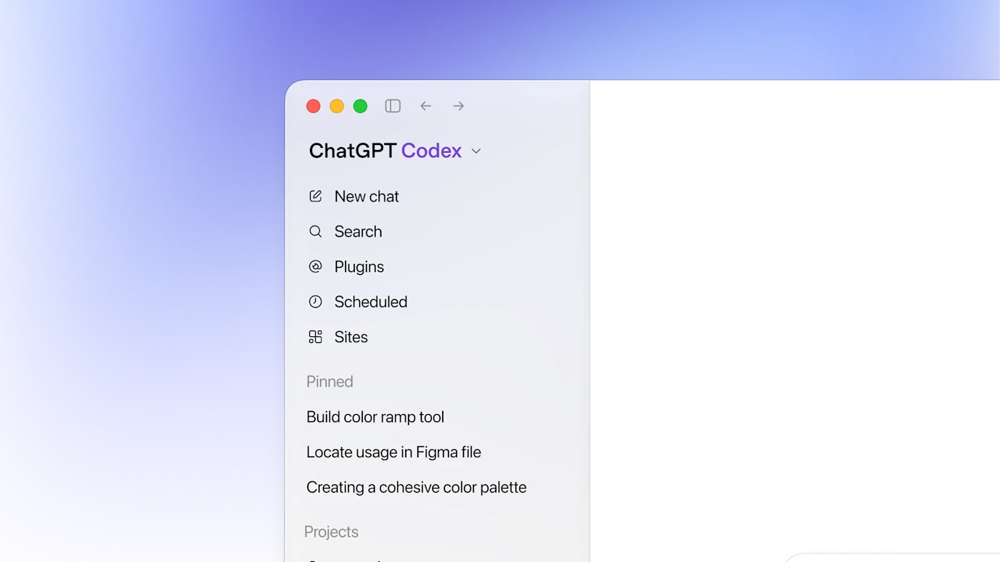
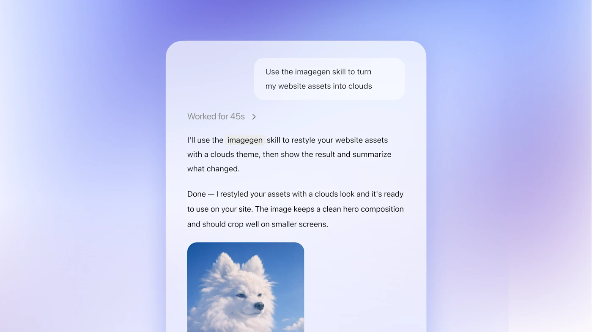
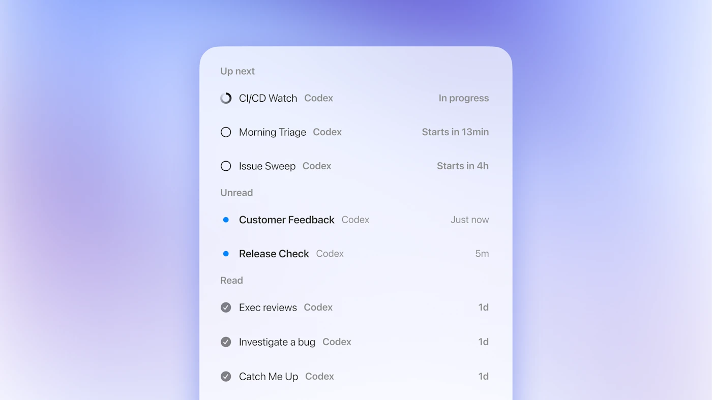
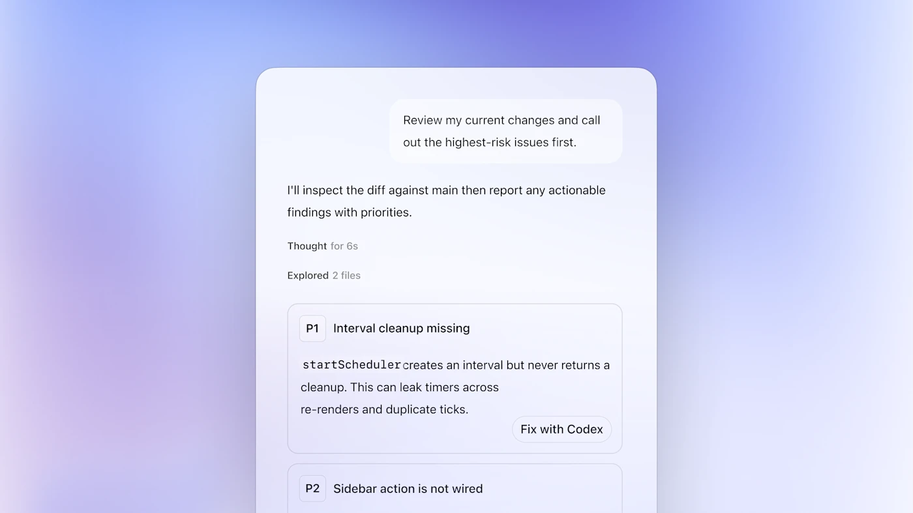
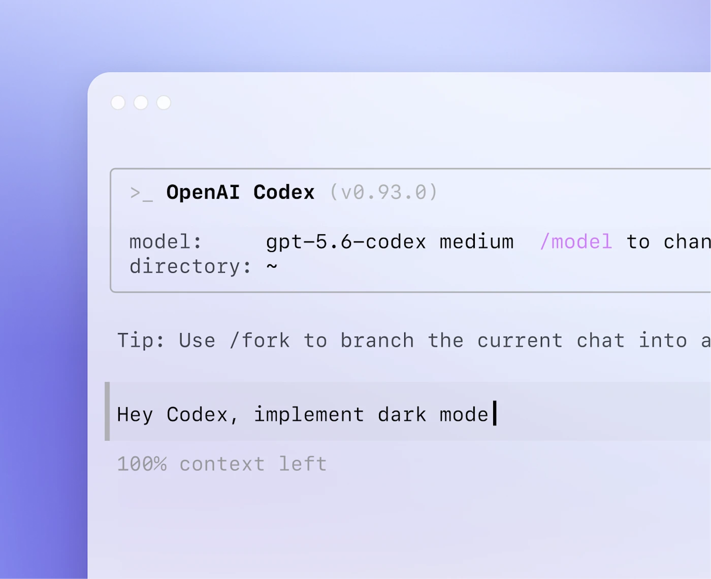

出品方
OpenAI
CHAPTER 04
Codex 是 OpenAI 面向软件开发的智能体，可在 ChatGPT、桌面应用、IDE 扩展和 CLI 中使用。它能在独立工作区里编写、运行和检查代码，也支持并行任务、Skills、后台自动化与代码审查。官方方案与本地自定义模型的使用边界不同，后文分别说明。

图源：Codex 桌面应用实机截图（仅用于教学对比）
Codex 随 ChatGPT 方案提供，Free / Go 也包含有限用量；云端任务则需要符合条件的付费方案。用量和可用模型因方案而异，订阅详情以官方页面为准。

描述要实现的目标后，Codex 可以在本地或云端工作区读取项目、修改文件、运行命令并汇报结果。云端任务可在电脑休眠时继续运行；本地任务则沿用当前设备与项目环境。

复杂任务可以拆成多条并行工作，各自在独立 worktree 中改动，降低文件冲突。侧栏按项目整理会话，方便切换任务和查看进展；合并前仍需检查各自的改动。

把团队的编码标准、工作流写成 Skill，跨任务一致复用、减少人工监督——让"最佳实践"变成 Agent 默认遵循的肌肉记忆。

定时或触发式跑长任务：自动 issue 分流、告警监控、CI/CD 巡检等，结果进入审核队列，适合"挂机"型工程维护。

自动生成变更摘要与 diff、给出高质量 review 意见，从源头把控质量；也能直接代开 PR、修 CI 失败，闭环更完整。

CLI 可从终端启动编码任务；另可通过 OpenAI API 将模型接入自有工具，按 Token 用量计费。例如 GPT‑6 Sol 为 $2 / $10、Luna 为 $0.10 / $0.50（每百万输入 / 输出 Token；价格可能调整）。

Codex 的 CLI、桌面应用和 IDE 扩展共用本地配置。修改 provider 可将本地任务接到兼容 OpenAI Responses 协议的第三方端点（例如 DeepSeek）。
model = "deepseek-flash"
model_provider = "deepseek"
model_catalog_json = "~/.codex/models.json"
preferred_auth_method = "apikey" # 走密钥登录，不弹 ChatGPT 账号流程
forced_login_method = "api"
[model_providers.deepseek]
name = "DeepSeek"
base_url = "https://api.deepseek.com/"
wire_api = "responses" # 关键：按 OpenAI Responses 协议通信
experimental_bearer_token = "填入自己的 DeepSeek API Key"
# ↑ experimental_ 前缀 = 非官方承诺接口